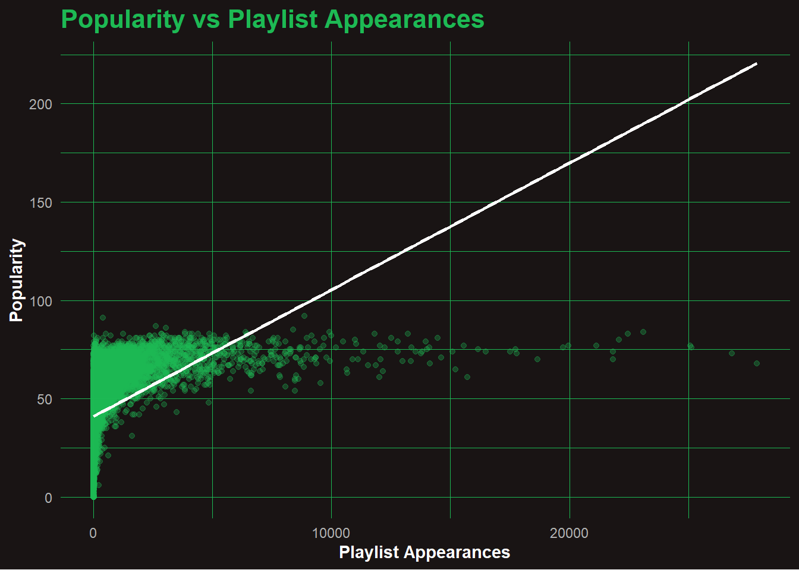
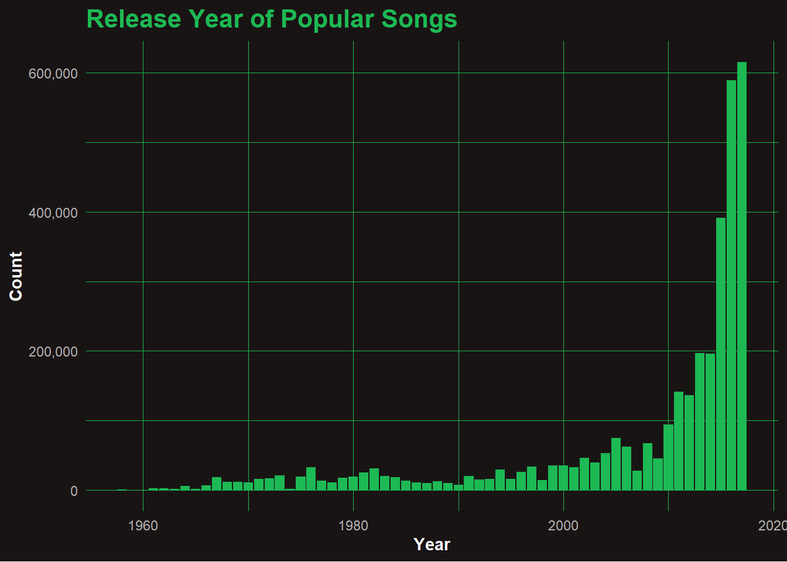
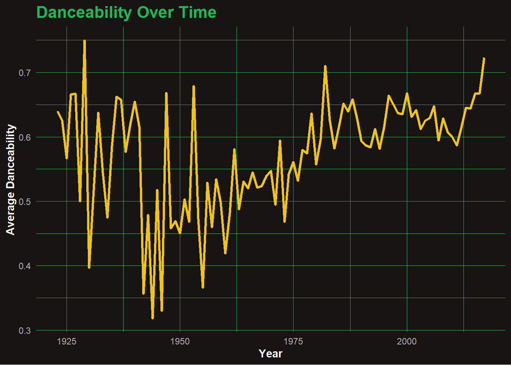
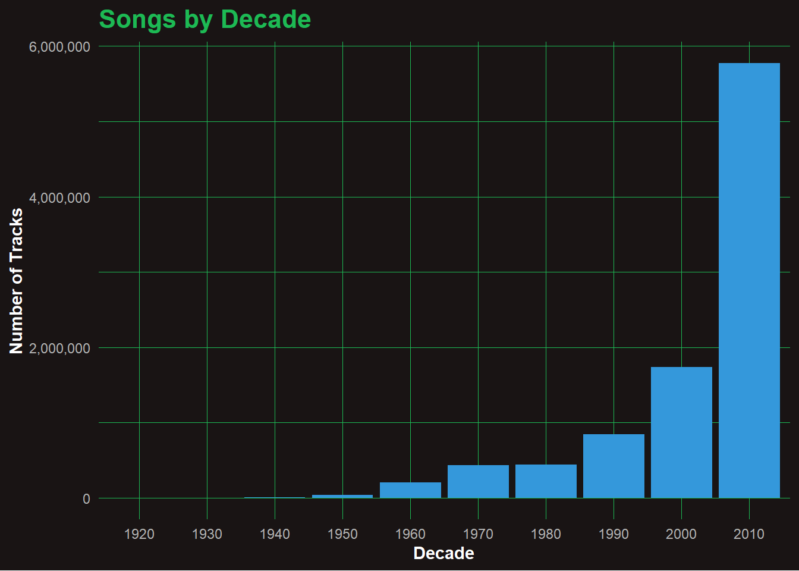
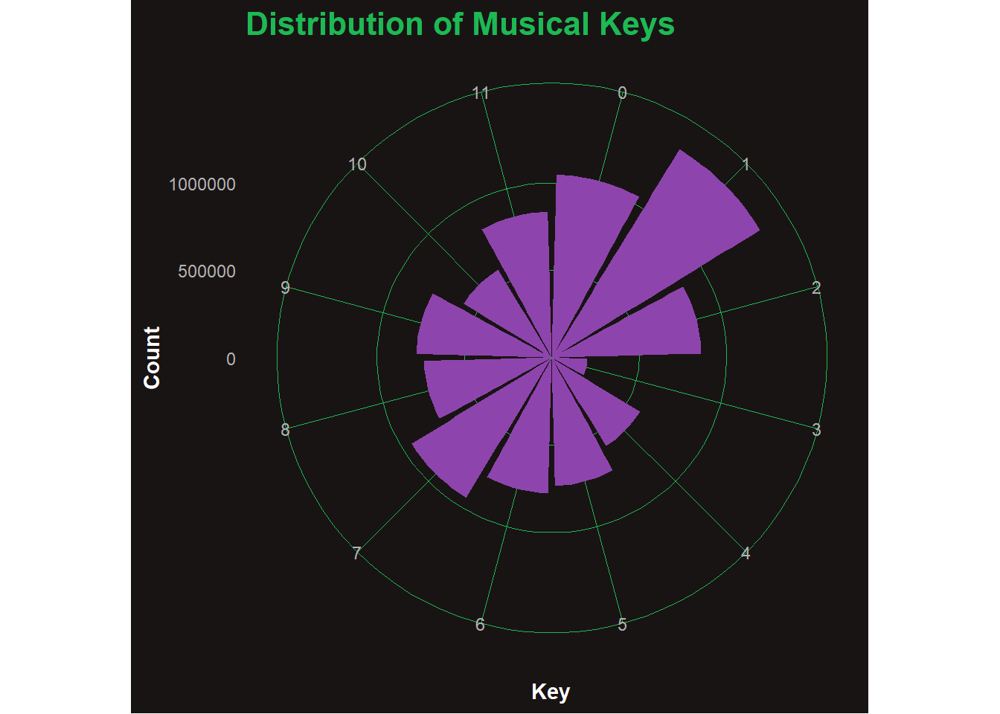
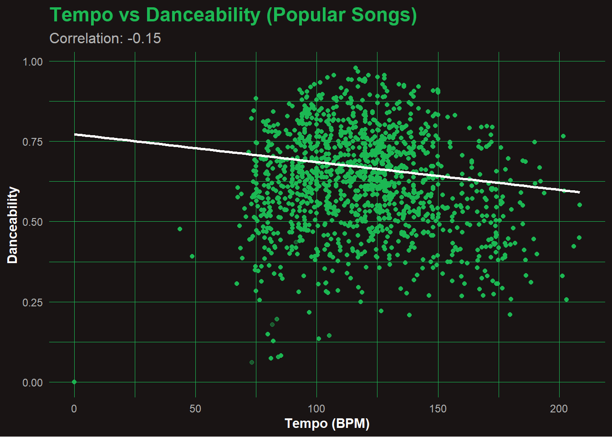
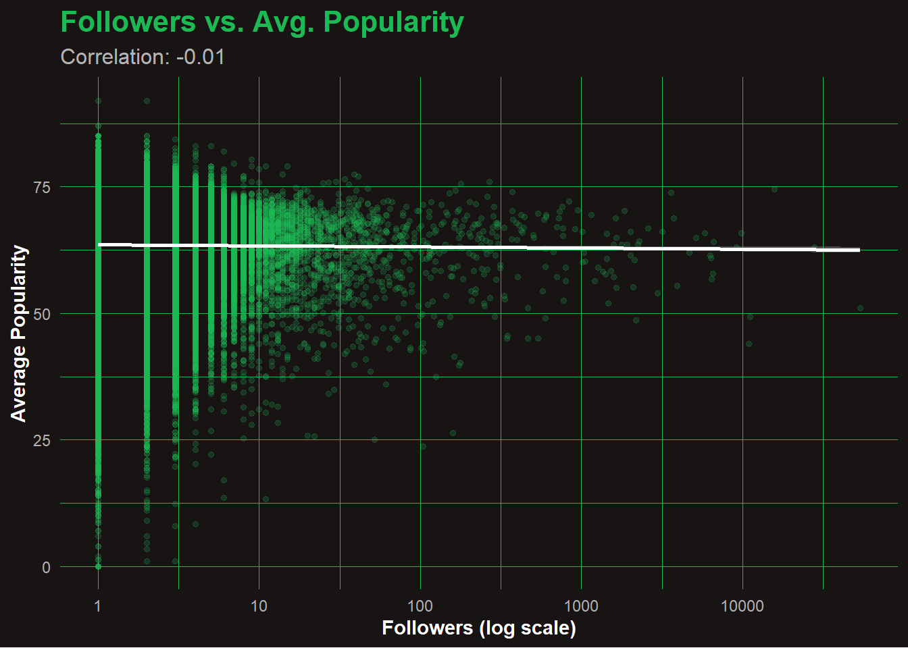
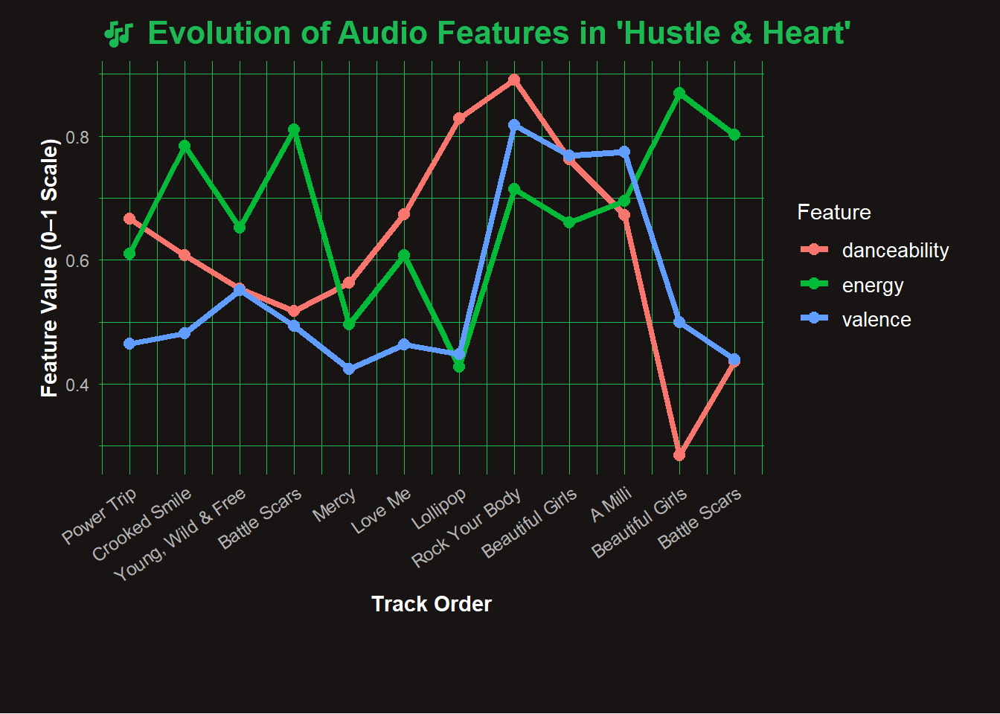

From millions of Spotify tracks and playlists, Hustle & Heart emerges as a curated sound journey built on energy, emotion, and authenticity. This project explores what makes songs stick — analyzing popularity, danceability, and musical DNA — before distilling it all into a final 12-track playlist that hits with both data and vibe.
This chunk sets a custom Spotify-themed style for all plots and tables to give the report a bold, immersive aesthetic. 🎨🟢🖤
Code
library(ggplot2)library(kableExtra)theme_spotify <-function() {theme_minimal(base_family ="Arial") +theme(plot.background =element_rect(fill ="#191414", color =NA),panel.background =element_rect(fill ="#191414", color =NA),panel.grid =element_line(color ="#1DB954", linewidth =0.1),text =element_text(color ="white"),axis.title =element_text(face ="bold", color ="white"),axis.text =element_text(color ="#b3b3b3"),plot.title =element_text(size =16, face ="bold", color ="#1DB954"),plot.subtitle =element_text(size =12, color ="#b3b3b3") )}spotify_table <-function(df, caption_text ="") { knitr::kable(df, format ="html", caption = caption_text) |> kableExtra::kable_styling(full_width =TRUE,bootstrap_options =c("striped", "hover", "condensed", "responsive"),position ="left" ) |> kableExtra::row_spec(0, background ="#1DB954", color ="white") |> kableExtra::kable_styling(font_size =14)}
🎧 Task 1: Load Spotify Song Characteristics
In this first task, we download and clean a Spotify song characteristics dataset made available via GitHub. The dataset includes song-level features such as danceability, energy, valence, and more. Our goal is to create a clean, rectangular dataset where each row corresponds to a single artist-song pair.
id
name
duration_ms
release_date
year
acousticness
danceability
energy
instrumentalness
liveness
loudness
speechiness
tempo
valence
mode
key
popularity
explicit
artist
6KbQ3uYMLKb5jDxLF7wYDD
Singende Bataillone 1. Teil
158648
1928
1928
0.995
0.708
0.1950
0.563
0.1510
-12.428
0.0506
118.469
0.7790
1
10
0
0
Carl Woitschach
6KuQTIu1KoTTkLXKrwlLPV
Fantasiestücke, Op. 111: Più tosto lento
282133
1928
1928
0.994
0.379
0.0135
0.901
0.0763
-28.454
0.0462
83.972
0.0767
1
8
0
0
Robert Schumann
6KuQTIu1KoTTkLXKrwlLPV
Fantasiestücke, Op. 111: Più tosto lento
282133
1928
1928
0.994
0.379
0.0135
0.901
0.0763
-28.454
0.0462
83.972
0.0767
1
8
0
0
Vladimir Horowitz
6L63VW0PibdM1HDSBoqnoM
Chapter 1.18 - Zamek kaniowski
104300
1928
1928
0.604
0.749
0.2200
0.000
0.1190
-19.924
0.9290
107.177
0.8800
0
5
0
0
Seweryn Goszczyński
6M94FkXd15sOAOQYRnWPN8
Bebamos Juntos - Instrumental (Remasterizado)
180760
9/25/28
1928
0.995
0.781
0.1300
0.887
0.1110
-14.734
0.0926
108.003
0.7200
0
1
0
0
Francisco Canaro
6N6tiFZ9vLTSOIxkj8qKrd
Polonaise-Fantaisie in A-Flat Major, Op. 61
687733
1928
1928
0.990
0.210
0.2040
0.908
0.0980
-16.829
0.0424
62.149
0.0693
1
11
1
0
Frédéric Chopin
6N6tiFZ9vLTSOIxkj8qKrd
Polonaise-Fantaisie in A-Flat Major, Op. 61
687733
1928
1928
0.990
0.210
0.2040
0.908
0.0980
-16.829
0.0424
62.149
0.0693
1
11
1
0
Vladimir Horowitz
6NxAf7M8DNHOBTmEd3JSO5
Scherzo a capriccio: Presto
352600
1928
1928
0.995
0.424
0.1200
0.911
0.0915
-19.242
0.0593
63.521
0.2660
0
6
0
0
Felix Mendelssohn
6NxAf7M8DNHOBTmEd3JSO5
Scherzo a capriccio: Presto
352600
1928
1928
0.995
0.424
0.1200
0.911
0.0915
-19.242
0.0593
63.521
0.2660
0
6
0
0
Vladimir Horowitz
6O0puPuyrxPjDTHDUgsWI7
Valse oubliée No. 1 in F-Sharp Major, S. 215/1
136627
1928
1928
0.956
0.444
0.1970
0.435
0.0744
-17.226
0.0400
80.495
0.3050
1
11
0
0
Franz Liszt
Task 2: Import Playlist Dataset
We responsibly download and combine all JSON playlist slices into a single list for future processing.
🎼 Task 3: Rectify Playlist Data to Track-Level Format
We flatten the hierarchical playlist JSONs into a clean, rectangular track-level format, stripping unnecessary prefixes and standardizing column names.
📝 Analysis: The dataset contains a rich collection of unique tracks and artists, showcasing Spotify’s extensive catalog diversity across user playlists.
📝 Analysis: High follower count reflects strong user trust and playlist curation quality—these often become global listening staples.
🎧 Task 5: Visually Identifying Characteristics of Popular Songs
We explore audio features to discover what makes songs popular, including trends over time, genre markers, and playlist impact.
📈 Q1: Is Popularity Correlated with Playlist Appearances?
Code
track_popularity <- joined_data %>%group_by(track_id, name, popularity) %>%summarise(playlist_appearances =n(), .groups ="drop")ggplot(track_popularity, aes(x = playlist_appearances, y = popularity)) +geom_point(alpha =0.3, color ="#1DB954") +geom_smooth(method ="lm", se =FALSE, color ="white") +labs(title ="Popularity vs Playlist Appearances",x ="Playlist Appearances",y ="Popularity" ) +theme_spotify()

📊 Analysis: Popularity vs Playlist Appearances
While there’s a general trend that more playlist appearances boost popularity, the effect flattens at the top — even tracks in 20K+ playlists rarely reach max popularity. Many mid-popularity songs appear in far fewer playlists, suggesting other drivers like artist fame or viral trends. A few standout hits dominate both metrics, but overall, exposure alone doesn’t guarantee peak popularity. This reveals a diminishing return effect beyond a certain playlist count.
📅 Q2: When Were Popular Songs Released?
Code
joined_data %>%filter(popularity >=70, !is.na(year)) %>%count(year) %>%ggplot(aes(x = year, y = n)) +geom_col(fill ="#1DB954") +scale_y_continuous(labels =label_comma()) +labs(title ="Release Year of Popular Songs", x ="Year", y ="Count") +theme_spotify()

####📊 Analysis: Release Year of Popular Songs Most popular songs in the dataset were released post-2010, with an explosive surge after 2015. This spike likely reflects both Spotify’s growth and a preference bias in playlist curation toward newer tracks. Songs from earlier decades exist but are underrepresented — possibly due to lower streaming metadata or user nostalgia filters. The sharp rise suggests that recency plays a major role in determining which songs become popular on modern playlists.
💃 Q3: When Did Danceability Peak?
Code
joined_data %>%group_by(year) %>%summarise(avg_danceability =mean(danceability, na.rm =TRUE)) %>%ggplot(aes(x = year, y = avg_danceability)) +geom_line(color ="#F1C40F", linewidth =1.2) +labs(title ="Danceability Over Time", x ="Year", y ="Average Danceability") +theme_spotify()

🎶 Analysis: Danceability Over Time
Danceability levels show considerable fluctuation before the 1950s, likely due to sparse data and inconsistent genre tracking. From the 1970s onward, there’s a noticeable and steady increase in average danceability, suggesting a shift in musical production toward rhythm-centric, movement-friendly tracks. This trend accelerates post-2000, aligning with the rise of pop, hip-hop, and electronic genres that dominate modern playlists. Overall, the data reflects how music has evolved to favor groove and energy.
📀 Q4: Most Represented Decade
Code
joined_data %>%mutate(decade = (year %/%10) *10) %>%count(decade) %>%ggplot(aes(x =as.factor(decade), y = n)) +geom_col(fill ="#3498DB") +scale_y_continuous(labels =label_comma()) +labs(title ="Songs by Decade", x ="Decade", y ="Number of Tracks") +theme_spotify()

📊 Analysis: Songs by Decade
The number of tracks released per decade has exploded in the digital era. While growth remained modest from the 1950s through the 1990s, the 2000s saw a sharp climb—likely due to the rise of digital recording and online distribution. The 2010s alone account for over 6 million tracks, highlighting how accessible music production and publishing have become. This reinforces the modern trend of music abundance and democratized creation.
🎹 Q5: Key Frequency (Polar Plot)
Code
joined_data %>%count(key) %>%mutate(key =as.factor(key)) %>%ggplot(aes(x = key, y = n)) +geom_col(fill ="#8E44AD") +coord_polar() +labs(title ="Distribution of Musical Keys", x ="Key", y ="Count") +theme_spotify()

🎼 Analysis: Distribution of Musical Keys
This polar plot shows the frequency of tracks in each musical key (0–11), where each number corresponds to a semitone in the chromatic scale (e.g., 0 = C, 1 = C♯/D♭, … 11 = B). Keys like C major (0) and G♯/A♭ (8) appear to be the most common, likely due to their favorable sound and playability. Meanwhile, less common keys like F♯ (6) and B♭ (10) are underrepresented. This trend may reflect production preferences in pop and hip-hop, where easier or more resonant keys dominate.
Most songs cluster between 2.5 to 4.5 minutes, which aligns with the standard radio-friendly length. The distribution is tightly packed, and tracks beyond 6 minutes are rare. Outliers likely include remixes, intros, or live recordings. This confirms that shorter durations remain the norm for high engagement and replayability on platforms like Spotify.
🎼 Q7: Tempo vs Danceability (Popular Songs)
Code
popular_songs <- joined_data %>%filter(popularity >=70)cor_val <-cor(popular_songs$tempo, popular_songs$danceability, use ="complete.obs")ggplot(popular_songs, aes(x = tempo, y = danceability)) +geom_point(alpha =0.4, color ="#1DB954") +geom_smooth(method ="lm", se =TRUE, color ="white") +labs(title ="Tempo vs Danceability (Popular Songs)",subtitle =paste0("Correlation: ", round(cor_val, 2)),x ="Tempo (BPM)",y ="Danceability" ) +theme_spotify()

🕺 Analysis: Tempo vs Danceability
The scatterplot reveals a slight negative correlation (r = -0.15) between tempo and danceability among popular songs. Contrary to what one might expect, faster tempos do not necessarily lead to higher danceability. Many highly danceable tracks fall in the 90–120 BPM range, suggesting that groove and rhythm matter more than speed. Extremely fast or slow songs often sacrifice the steady beat that encourages dancing.
📊 Q8: Playlist Followers vs Avg. Popularity
Code
followers_vs_popularity <- joined_data %>%group_by(playlist_id, playlist_name, playlist_followers) %>%summarise(avg_popularity =mean(popularity, na.rm =TRUE), .groups ="drop")cor_val <-cor(log1p(followers_vs_popularity$playlist_followers), followers_vs_popularity$avg_popularity, use ="complete.obs")ggplot(followers_vs_popularity, aes(x = playlist_followers, y = avg_popularity)) +geom_point(alpha =0.2, size =1.2, color ="#1DB954") +geom_smooth(method ="lm", se =TRUE, color ="white") +scale_x_log10() +labs(title ="Followers vs. Avg. Popularity",subtitle =paste0("Correlation: ", round(cor_val, 2)),x ="Followers (log scale)",y ="Average Popularity" ) +theme_spotify()

📉 Analyze: Followers vs. Average Popularity
Despite the wide range of follower counts (on a log scale), there’s almost no correlation between how many followers a playlist has and how popular its songs are (correlation = -0.01).
This suggests that playlist influence doesn’t directly boost track popularity, or that popular songs are just as likely to appear in smaller playlists.
The dense vertical lines at low follower counts show a long tail of smaller, niche playlists contributing to the ecosystem.
🔍 Task 6: Finding Related Songs
We now build a playlist around two anchor tracks — Drop The World and No Role Modelz — using five custom heuristics to find compatible songs across tempo, mood, popularity, and year.
🎵 Identify Anchor Tracks
Code
anchor_names <-c("Drop The World", "No Role Modelz")popular_threshold <-70anchor_tracks <- joined_data %>%filter(track_name %in% anchor_names)cat("🎵 Anchor Songs Found:", nrow(anchor_tracks), "\n")
🎵 Anchor Songs Found: 11902
🎬 Anchor Tracks – YouTube Preview
These tracks defined the tone of Hustle & Heart. Watch their official drops below. 👇
Drop the world- By Lil Wayne and eminem
No role modelz- J.Cole
🎧 Heuristic 1: Co-occurring Songs in a Random Playlist
final_playlist %>%select(track_name, artist_name, popularity, playlist_name) %>%distinct() %>%slice_head(n =20) %>%spotify_table("🎧 Top 20 Playlist Candidates Based on 5 Heuristics")
🎧 Top 20 Playlist Candidates Based on 5 Heuristics
track_name
artist_name
popularity
playlist_name
Ignition - Remix
R. Kelly
70
throwback
Sure Thing
Miguel
74
throwback
Power Trip
J. Cole
72
throwback
Whatever You Like
T.I.
74
throwback
Crooked Smile
J. Cole
69
throwback
So Good
B.o.B
65
throwback
Rich As Fuck
Lil Wayne
62
throwback
Young, Wild & Free (feat. Bruno Mars) - feat. Bruno Mars
Snoop Dogg
65
throwback
Strange Clouds (feat. Lil Wayne) - feat. Lil Wayne
B.o.B
60
throwback
The Motto
Drake
72
throwback
Battle Scars
Lupe Fiasco
70
throwback
The Show Goes On
Lupe Fiasco
71
throwback
Mercy
Kanye West
71
throwback
Satellites
Kevin Gates
46
throwback
Love Me
Lil Wayne
66
throwback
No Hands (feat. Roscoe Dash and Wale) - Explicit Album Version
Waka Flocka Flame
75
throwback
Lollipop
Lil Wayne
70
throwback
Rock Your Body
Justin Timberlake
71
throwback
Beautiful Girls
Sean Kingston
78
throwback
A Milli
Lil Wayne
72
throwback
🎧 Task 7: Curate and Analyze Your Ultimate Playlist – “Hustle & Heart”
Twelve tracks. One vibe. Built from raw energy, emotional drive, and underdog spirit. Featuring rap heavyweights, slept-on gems, and genre-bending transitions, “Hustle & Heart” was crafted using 5 analytical heuristics and a whole lot of gut.

🎶 Evolution of Audio Features in ‘Hustle & Heart’ Playlist
Hustle and Heart 🎧
🧠 Note: While most tracks in Hustle & Heart were selected using a data-driven similarity score, two foundational songs — “Drop the World” and “No Role Modelz” — were manually included as thematic anchors due to their lyrical intensity and motivational energy as they were included in data but was dropped down during popularity ranking.
Click ▶️ and enjoy the full curated soundtrack — no skips, no scrolls. 🔥